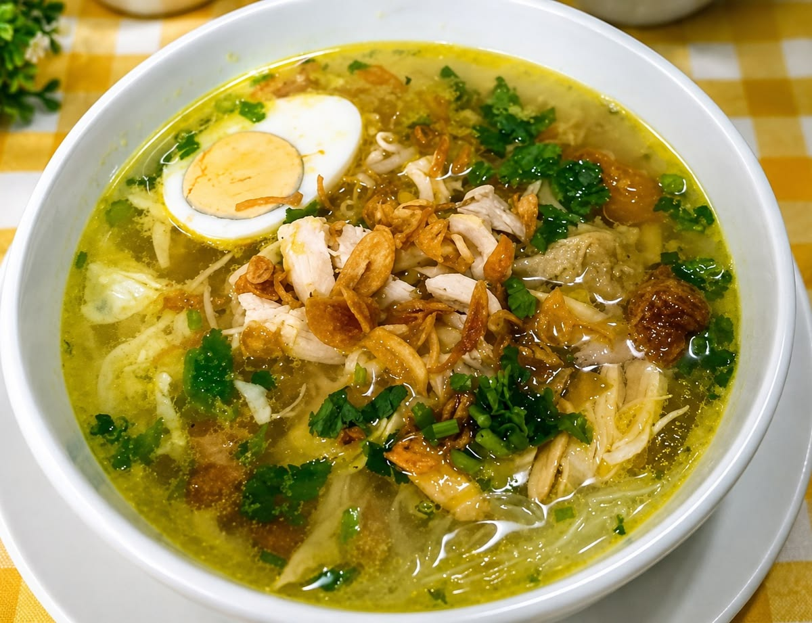
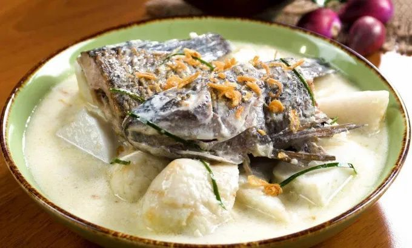
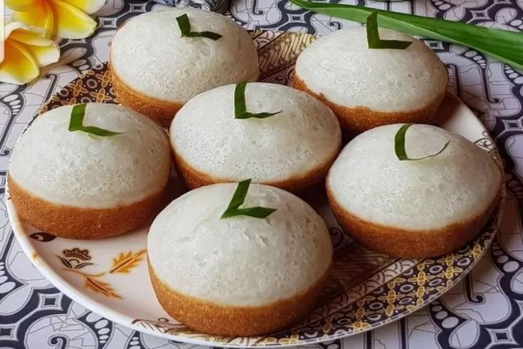
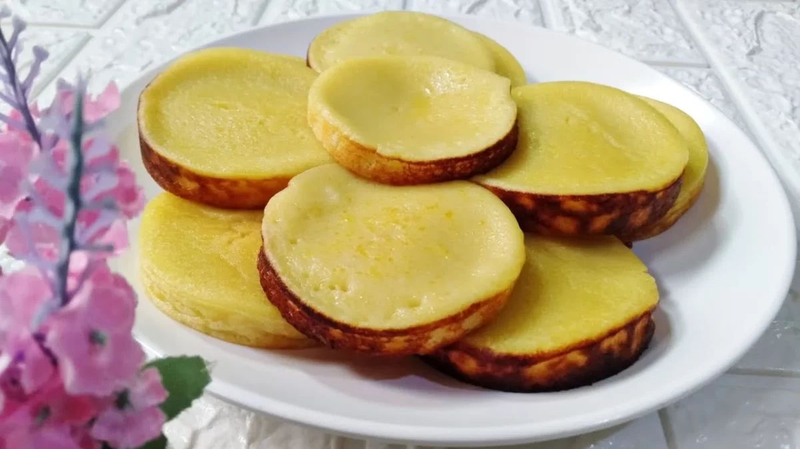

01

TRADITIONAL DISH
Soto Banjar
A fragrant chicken soup associated with South Kalimantan, served with spices and comforting broth.
01 / LOCAL FOOD
A few traditional dishes that introduce the taste of South Kalimantan.

TRADITIONAL DISH
A fragrant chicken soup associated with South Kalimantan, served with spices and comforting broth.

TRADITIONAL DISH
Rice cakes served with fish and a rich coconut-based sauce, known as one of the region's familiar dishes.

TRADITIONAL SNACK
A soft traditional cake with a characteristic sweet taste, often enjoyed as a local snack.

TRADITIONAL SNACK
A soft, rich traditional cake with a sweet flavor and familiar place in Banjar culinary culture.